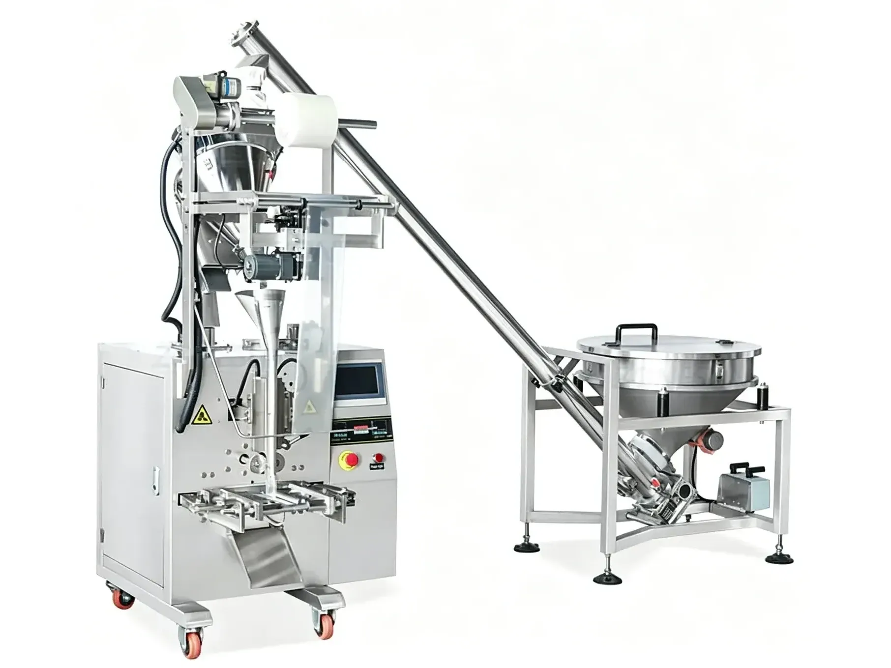

Sachet Packaging Machines
Automatic Auger Powder Sachet Packing Machine
The PBF-380 Automatic Auger Powder Sachet Packing Machine is designed for automatic packaging of dry and fine powder products into small bags or stick-style sachets. The machine integrates powder feeding, auger dosing, bag forming, filling, heat sealing, cutting and optional coding into one continuous packaging process.